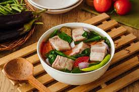

<!DOCTYPE html>
<html lang="en">
<head>
    <meta charset="UTF-8">
    <meta http-equiv="X-UA-Compatible" content="IE=edge">
    <meta name="viewport" content="width=device-width, initial-scale=1.0">
    <title>How to cook Sinigangtitle>
</head>
<body>
    <a href="https://mikaezu.github.io/food_Recipe/">Go Back</a>
    <div class="about">
        <h1>Pork Sinigang</h1>
        <h4>A Filipino classic dish.</h4>
        <h2>Brief History</h2>
        <p>
            Sinigang comes from the verb “sigang” meaning “to stew”  therefore, sinigang means “stewed”.
        The stew, or soup really as it's a lighter broth, simmers a protein in a sour broth with vegetables. The sourness comes from sour fruits, typically tamarind and never vinegar.
        While this is a soup, it is not like a western soup course as an appetizer. Rather, it is considered a main dish as it is cooked in abundance for a family or gathering.
        the Filipino style of Menudo originated during the time of Spanish colonization in the Philippines. Sautéing is a method of cooking introduced by the Spaniards during their colony and therefore, the pork meat is first sautéed in garlic and onion before stewing in tomato sauce. This, by the way, is the traditional
        culinary method in cooking this delicious Filipino dish.
        </p>
        <p>
            Sinigang is formulated by the Tagalogs- which obviously gives us the idea that it is these people who have first cultivated the now rich and diverse identity of this well-loved Tatak-Pinoy cuisine.
Also, with the Tagalog giving birth to what is usually called as Sinigang, we could expect that the many different variations of this soup other than what it is generally assumed to be, are the variations which the Visayans and Mindanaoans have put into life. Nonetheless, whether it is the Sinigang of the Tagalogs, or those from the latter stated, the use of Patis or fish sauce is well-utilized in the enhancement 
of both the sets from the 3 main hierarchy of version-birth-giving regions.
        </p>
        
        
    </div>
    <div class="mini">
        <button>Discover more recipes</button>
        <div class="cook-time">
            <h5>Cooking Time</h5>
            <!--Icon here-->
            <p>60 mins</p>
        </div>
        <div class="difficulty">
            <h5>Difficulty</h5>
            <!--Icon here-->
            <p>Easy</p>
        </div>
        <div class="servings">
            <h5>Servings</h5>
            <!--Icon here-->
            <p>4 people</p>
        </div>
    </div>
    <div class="section">
        <h1>How to Cook Pork Sinigang</h1>
        <div class="ingredients">
            <h1>Ingredients</h1>
            <ul>
                <li>2 cups pork spare rib cut into chunks</li>
                <li>4¼ cups water</li>
                <li>1 pc red onion, quartered</li>
                <li>2 pcs medium sized tomato, quartered</li>
                <li>8 pcs sitaw, sliced into 2” pieces</li>
                <li>250 g kangkong stalk and leaves</li>
                <li>1 pc talong, sliced</li>
                <li>2 pcs siling pangsigang</li>
                <li>1 (20g) pack  Sinigang sa Sampalok Mix Original</li>
                <li><span>Optional:</span> labanos, okra</li>
            </ul>
        </div>
        <div class="steps">
            <h1>Cooking Steps</h1>
            <ul>
                <h2>Step 1</h2>
                <li>Begin by washing pork spare ribs in cold running water to remove any visible impurities. Then, place pork ribs submerge in a medium pot with a liter of water. Bring to a boil without covering the pot and allow the scum to float to the surface. Meticulously remove the scums from the surface of the water using a slotted spoon or a spatula. Scums are impurities found in meat.</li>
                <h2>Step 2</h2>
                <li>After the broth clears up, turn you heat to medium setting, then it's time toss in your onions and tomatoes to add flavor to the broth. Cover your pot and let it simmer to fully cook your meat. Use a fork to pierce the meat so that the flavors would also enter the meaty parts of the spare ribs, You also do this so you can tell if it's already set and tender.</li>
                <h2>Step 3</h2>
                <li>You can already add your vegetables. Start by adding the sitaw, kangkong stalks and talong into the pot and cook until these turn dark green. If you decide to use labanos and okra, you can also add those at this point. This should take roughly around 2-3 minutes.</li>
                <h2>Step 4</h2>
                <li>Add in your siling sigang, kangkong leaves and the Knorr Sinigang sa Sampaloc Mix. Stir and let it simmer. It should be done in about 2-3 minutes.</li>
                <h2>Step 5</h2>
                <li>All done! Transfer your Sinigang to a serving bowl. This is a happy treat that warms, soothes and satisfies everyone in the family! Remember to prepare extra servings of rice to enjoy the
                 extra asim kilig taste of this Filipino classic soup. Enjoy!</li>
            </ul>
            <div class="tips">
                <h1>BIG difference tip</h1>
                <p>Tamarind contains lots of antioxidants and anti-inflammatory properties that help reduce the risks of heart disease, cancer and diabetes.</p>
                <button>Learn More</button>
            </div>
        </div>
        <div class="suggested">
            <h1>Suggested Recipe</h1>
            <div class="adobo">
                <a href="../food_Menu/adobo.html">
                  
                </a>
                <h4>Pork Adobo</h4>
                <ul>
                    <!--icon inside-->
                    <li>30 mins</li>
                    <li>4 people</li>
                </ul>
            </div>
            <div class="menudo">
                <a href="../food_Menu/menudo.html">
                  
                </a>
                <h4>Pork Menudo</h4>
                <ul>
                    <!--icon inside-->
                    <li>30 mins</li>
                    <li>4 people</li>
                </ul>
            </div>
            <div class="kare">
                <a href="../food_Menu/kare.html">
                  
                </a>
                <h4>Kare - Kare</h4>
                <ul>
                    <!--icon inside-->
                    <li>90 mins</li>
                    <li>4 people</li>
                </ul>
            </div>
        </div>
    </div>
</body>
</html>